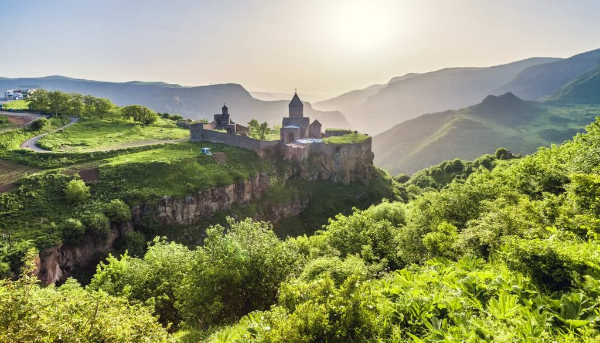
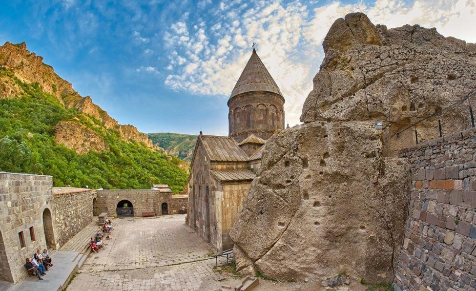

Tatev Monastery
9-th century.Located in Syunik region
Sevan Monastery
9-th century. Located in Sevan peninsula, Gegharkunik region

Ayrivanq (Monastery of the Cave)
13-th century. Located in Kotayq region.